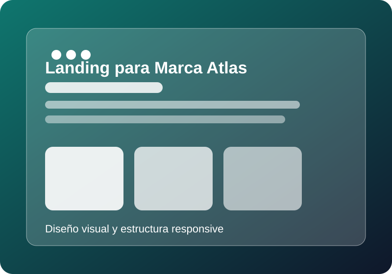
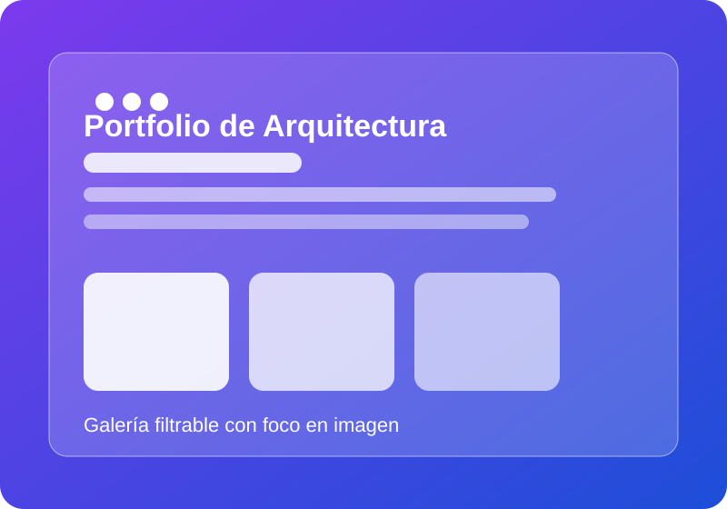
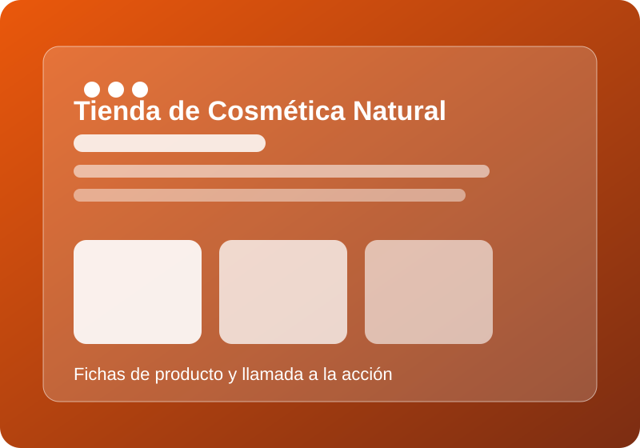
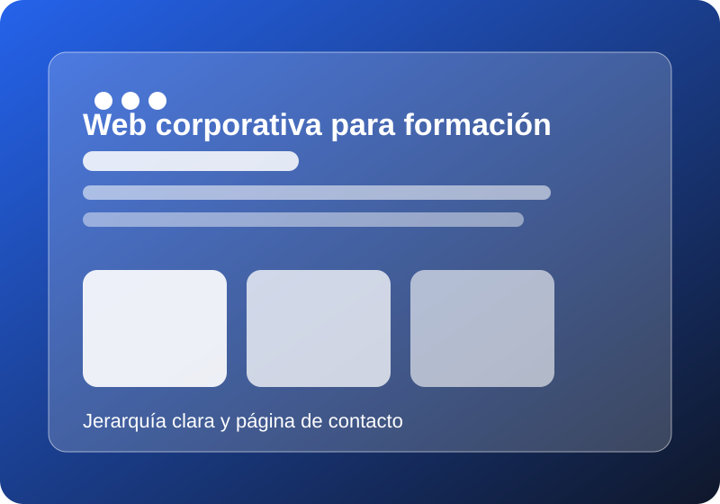

Landing para Marca Atlas
Página de inicio centrada en mensaje, identidad visual y captación de clientes potenciales.
Portfolio
Selección de proyectos ficticios planteados como ejemplo de diseño corporativo, escaparate de producto y presencia profesional.

Página de inicio centrada en mensaje, identidad visual y captación de clientes potenciales.

Galería visual con bloques amplios, equilibrio entre texto e imagen y navegación intuitiva.

Presentación de catálogo con fichas resumidas y diseño limpio orientado a conversión.

Sitio pensado para explicar servicios, destacar ventajas y facilitar el contacto con la empresa.